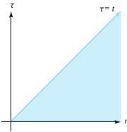
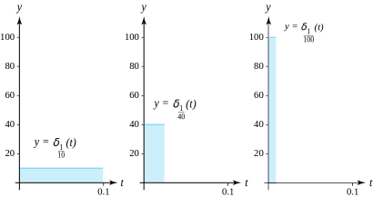
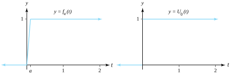

Let \(F(s)\) and \(G(s)\) denote the transforms of \(f(t)\) and \(g(t)\text{,}\) respectively. Then the inverse of the product \(F(s)G(s)\) is given by the function \(h(t) =(f\ast g)(t)\) and is called the convolution of \(f(t)\) and \(g(t)\) and can be regarded as a generalized product of \(f(t)\) and \(g(t)\text{.}\) Convolutions are helpful in solving integral equations.
Theorem11.10.1.Convolution Theorem.
Let \(F(s)\) and \(G(s)\) denote the Laplace transforms of \(f(t)\) and \(g(t)\text{,}\) respectively. Then the product given by \(H(s)=F(s)G(s)\) is the Laplace transformation of the convolution of \(f\) and \(g\text{.}\) It is denoted by \(h(t)=(f\ast g)(t)\text{,}\) and has the integral representation
The following proof is given for the special case when \(s\) is a real number. The general case is covered in advanced texts. Using the dummy variables \(\sigma\) and \(\tau\) and the integrals defining the transforms, we can express their product as
Hold \(\tau\) fixed, and use the change of variables \(t=\sigma +\tau\) and \(dt=d\sigma\text{.}\) Then the inner integral in the equation can be rewritten to obtain
The region of integration for this last iterated integral is the wedge-shaped region in the \((t,\tau)\) plane shown in Figure 11.10.2. The order of integration in the integral can be reversed to get:
which establishes Equation (11.10.2). Since we can interchange the role of the functions \(f(t)\) and \(g(t)\text{,}\) Equation (11.10.1) follows immediately.

Figure11.10.2.The region of integration in the convolution theorem
Table 11.10.3 summarizes some important convolution properties.
Table11.10.3.Convolution Properties
Commutativity
\(f\ast g=g\ast f\)
\hdashline Distributivity
\(f\ast (g+h) =f\ast g+f\ast h\)
\hdashline Associativity
\((f\ast g) \ast h=f\ast (g\ast h)\)
\hdashline Zero
\(f\ast 0=0\)
Example11.10.4.
Show that \(\mathcal{L}^{-1}\left(\frac{2s}{(s^2+1)^2}\right) = t\sin t\text{.}\)
Solution.
Let \(F(s) = \frac{1}{s^2+1}\text{,}\)\(G(s) =\frac{2s}{s^2+1}, \, f(t) = \sin t, \, g(t) =2\cos t\text{,}\) respectively. Applying the convolution theorem we get
\begin{equation*}
f(t) = 2\cos t - t\sin t
\end{equation*}
Engineers and physicists sometimes consider forces that produce large effects that are applied over a very short time interval. The force acting at the time an earthquake starts is an example. This leads to the idea of a unit impulse function\(\delta(t)\text{.}\) Consider a small positive constant \(a\text{.}\) The function \(\delta_a(t)\) is defined by
Figure 11.10.6 shows the graph of \(\delta_a(t)\) for \(a=10, \, 40\text{,}\) and \(100\text{.}\) Although \(\delta(t)\) is called the Dirac delta function, it is not an ordinary function. To be precise it is a distribution, and the theory of distributions permits manipulations of \(\delta(t)\) as though it were a function. For our work, we will treat \(\delta(t)\) as a function and investigate its properties.

Figure11.10.6.Graphs of \(y=\delta_a(t)\) for \(a=10\text{,}\)\(40\text{,}\) and \(100\)
Example11.10.7.
Show that \(\mathcal{L}\big(\delta(t)\big) = 1\text{.}\)
Solution.
By definition, the Laplace transform of \(\delta_a(t)\) is
We now turn our attention to the unit impulse function. First, consider the function \(f_a(t)\) obtained by integrating \(\delta_a(t)\text{:}\)
\begin{equation*}
f_a(t) = \int_0^t\delta_a(\tau )\,d\tau = \begin{cases}0 \amp \text{ for } t \lt 0,\\ \frac{t}{a} \amp \text{ for } 0 \le t \le a,\\ 1 \amp \text{ for } a \lt t. \end{cases}
\end{equation*}
Then it is easy to see that \(U_0(t) =\lim\limits_{a \to 0}f_a(t)\) (see Figure 11.10.8).

Figure11.10.8.The integral of \(\delta_a(t)\) is \(f_a(t)\text{,}\) which becomes \(U_0(T)\text{,}\) which becomes \(U_0(t)\) when \(a \to 0\)
The response of a system to the unit impulse function is illustrated in the next example.
Example11.10.9.
Solve the initial value problem
\begin{equation*}
y\,''(t)+4y\,'(t)+13y(t)=3\delta(t) \text{ with } y(0) =0 \text{ and } y\,'(0^-)=0\text{.}
\end{equation*}
Solution.
Taking transforms results in \((s^2+4s+13)Y(s) = 3\mathcal{L}(\delta (t)) = 3\text{,}\) so that
Note: The condition \(y\,'(0^-) =0\) is not satisfied by the “solution” \(y(t)\text{.}\) Recall that all solutions using the Laplace transform are to be considered zero for values of \(t\lt 0\text{.}\) Hence the graph of \(y(t)\) is given in Figure 11.10.10. We see that \(y,'(t)\) has a jump discontinuity of magnitude \(+3\) at the origin. This happens because either \(y(t)\) or \(y\,'(t)\) must have a jump discontinuity at the origin whenever the Dirac delta function occurs as part of the input or driving function.
Solving for \(V(s)\) in the latter equation yields \(V(s)=\frac{1}{as^2+bs+c}G(s)\text{.}\) If we set \(H(s) =\frac{1}{as^2+bs+c}\text{,}\) then \(V(s) =H(s)G(s)\text{,}\) and the particular solution is given by the convolution
\begin{equation*}
y\,''(t) + y(t) = \tan t, \text{ with } y(0) = 1 \text{ and } y\,'(0) = 2\text{.}
\end{equation*}
Solution.
First solve \(u''(t) + u(t) = 0\) with \(u(0) = 1\) and \(u'(0) = 2\text{.}\) Taking the Laplace transform yields \(s^2U(s) - s- 2 + U(s) = 0\text{.}\) Solving for \(U(s)\) gives \(U(s) = \frac{s+2}{s^2+1}\text{,}\) and it follows that
\begin{equation*}
u(t) = \cos t + 2\sin t\text{.}
\end{equation*}
Second, observe that \(H(s) = \frac{1}{s^2+1}\) and \(h(t) = \sin t\text{,}\) so that
Given \(F(s) = \mathcal{L}\big(f(t)\big)\) and \(G(s)=\mathcal{L}(1) = \frac{1}{s}\) and \(g(t)=1\text{,}\) we have \(\mathcal{L}^{-1}\left(\frac{F(s)}{s}\right) = F(s)G(s) = (f \ast g)(t) = \int_0^tf(\tau)g(t-\tau)\,d\tau = \int_{0}^tf(\tau)\,d\tau\text{.}\)
12.
Use the convolution theorem to solve the following integral equations.